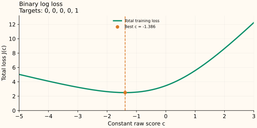

Binary Log Loss: From Class Frequency to Initial Log Odds
A constant binary classifier should assign the same probability to every row. Under log loss, its best probability equals the fraction of positive labels. A boosting model stores the corresponding log-odds score, which is a different number.
Probability, score, and loss
Use labels $y\in\{0,1\}$, a raw score $F$, and probability $p=\sigma(F)=1/(1+e^{-F})$. With natural logarithms, the loss is
For a positive label, only $-\log p$ remains; for a negative label, only $-\log(1-p)$ remains. A confident wrong prediction is therefore expensive.
On the score scale the same loss is $\ell(y,F)=\log(1+e^F)-yF$. Its score derivative is $p-y$, so the correction target is $y-p$. A tree adds its final correction to $F$; the new probability is obtained by applying the sigmoid afterward.
First find the best constant probability
Let $k=\sum_i y_i$ be the number of positive labels among $n$ rows. If every row gets probability $q$, their total loss is
Assume both classes occur, so $0<k<n$. Differentiate for $0<q<1$:
Set the slope to zero and multiply by the positive denominator $q(1-q)$:
The second derivative $k/q^2+(n-k)/(1-q)^2$ is positive, so this is the unique minimum in the interior.
Now convert probability into the starting score
We require $q^*=\sigma(c^*)$. Solving the sigmoid relation for $c^*$ gives
For labels $[0,0,0,0,1]$, the best probability is $1/5=0.2$. The best score is $\log(0.2/0.8)=\log(1/4)\approx-1.386$. A score of zero would predict probability 0.5, which ignores the observed class balance.


What if all labels are the same?
If every label is 0, $J(q)=-n\log(1-q)$ is minimized at $q=0$. The sigmoid reaches that probability only as $c\to-\infty$. If every label is 1, the optimum is $q=1$, corresponding to $c\to+\infty$.
Thus the best boundary probability exists, but a finite raw-score minimizer does not. If a finite implementation restricts $q$ to $[\varepsilon,1-\varepsilon]$, its best probability is the empirical fraction clipped to that interval. The restriction is part of that implementation’s objective or numerical policy.
Observation weights change the frequency
With fixed nonnegative weights, the same calculation replaces the count $k$ by $\sum_iw_i y_i$ and $n$ by $\sum_iw_i$. Hence $q^*=\sum_iw_i y_i/\sum_iw_i$, followed by the same log-odds conversion. Class weighting can therefore change the optimal constant even when the unweighted label frequency stays the same.
Sources and reproducible figures
The examples and plots are computed by this reproduction script, which also checks the stated minima. Inspect the figure data.